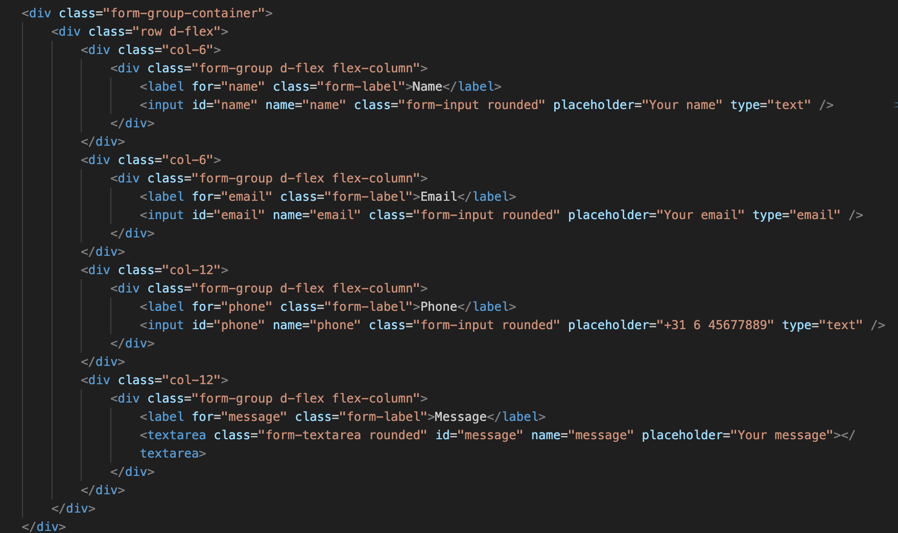

VoorafLO4 & LO5
In het begin van het tweede semester kreeg ik te horen dat ik een portofolio moest gaan maken. In dit portofolio moeten al mijn projecten en leeruitkomsten aangetoond worden. Meteen kwamen mij allemaal ideeën tevoorschijn. Persoonlijk houd ik van een strak en duidelijk ontwerp, daarom ziet mijn portofolio er nu zo uit.
Inspiratie
Als eerst ben ik op google gaan zoeken naar verschillende ontwerpen hierbij vond ik twee
ontwerpen die overheen kwamen met wat ik in gedachte had. Ik wil graag een duidelijk en
rustgevend portofolio. Hoe ik mijn porotfolio wil aanpaken is een full screen image carousel
gebruiken op de homepagina die door al mijn projecten scrollt. Als de eindgebruiker dan op een
van deze projecten klikt kom de eindgebruiker op de pagina die bij dit project hoort. op de
bijbehorende project pagina kan de eindgebruiker zien wat ik heb gedaan om dit project te
realiseren en hoe ik mijn leeruitkomsten kan aantonen.
Typografie
Ik heb ook gekeken naar een lettertype die ik kan gebruiken in mijn Portofolio. Ik vond eerst het lettertype genaamd 'Roboto' dit is een sans-serif lettertype wat ik mooi vind alleen wordt deze al vaker gebruikt in websites, hiernaast heb ik het lettype genaamt 'Rubik' gevonden. Rubik is een wat vierkantig lettertype wat mij aantrekt omdat mijn ontwerp ook geblokt gaat worden.
Roboto
Rubik
OntwerpenLO1 & LO3
Ontwerp 1
Bij mijn eerste ontwerp (Iteratie 1) heb ik grof gekeken naar de layout die ik wil gebruiken. ik wil een pagina maken waarbij je doorheen kan scrollen elke keer dat je scrollt kom je op een verschillend onderdeel van mijn portofolio.
Ontwerp 2
Met mijn inspiratie die ik heb opgezocht heb ik een tweede ontwerp gemaakt (Iteratie 2), dit ontwerp gebruikt nogsteeds de pagina waar de gebruiker doorheen kan blijven scrollen. In dit ontwerp heb ik meer gebruik gemaakt van kleuren en teksten. Op de bovenkant van de pagina zie je in het uitgelijnd Portfolio staan. Dit is de achtegrond die ik heel graag wil gebruiken in mijn laatste ontwerp, ook heb ik gekeken naar het gebruik maken van twee headers op elkaar met een andere kleur ik vind dit ook mooi alleen iets te druk voor mijn stijl.
Feedback - Dennis
LO4 & LO5
Met mijn tweede ontwerp ben ik in gesprek geweest met Dennis. Persoonlijk vond ik dat mijn ontwerp er al mooi uitzag voor het derde ontwerp. Dennis was het hier mee eens, ik kreeg als feedback te horen dat ik al te ver was in het process en een stapje teruguit moest doen, dit heb ik gedaan en heb ik wat meer inspiratie opgezocht zo vond ik het Tura ontwerp op Pinterest.
Ontwerp 3
In mijn derde ontwerp zie je veel terug van het vorige ontwerp en mijn inpspiratie bronnen, ik wil nog steeds gebruik maken van uitgelijnde tekst op de achtegrond, ook heb ik een image carrousel gebruikt om projecten aan te tonen.
Feedback - Paul
LO4 & LO5
Met mijn derde ontwerp ben ik naar Paul gegaan om te kijken wat hij er van vond. Paul vond mijn stijl van portfolio heel aantrekkelijk alleen moest ik kijken naar een full screen image carrousel die de hele pagina bedekt, ook kreeg ik te horen dat ik niet alleen projecten moet aantonen maar ook mijn leeruitkomsten, dit ga ik in het volgende ontwerp verbeteren.
Ontwerp 4
Na veel feedback van docenten en medestudenten heb ik een meer uitgewerkt ontwerp gemaakt. dit ontwerp is eigenlijk hoe ik mijn portfolio eruit wil laten zien. Je hebt een splashscreen, homepagina, projectenpagina en per project verschillende pagina's om deze projecten aan te tonen. Dit ontwerp vind ik er wel een beetje saai uit zien en sommige elementen werken niet goed met elkaar, denk hierbij aan de kleuren van de teksten en hoe die vallen op de achtergrond, dit wil ik in het eindontwerp verbeteren.
Portfolio Review 2
LO4 & LO5
In mijn tweede portofolio review heb ik dit ontwerp ook laten zien. De docenten vonden dat ik al goed op weg was alleen dat ik veel informatie miste en dan ik mijn ontwerp wat persoonlijker moet gaan maken. Ik wil daarom een water animatie toevoegen op de splashpagina en een haakje toevoegen als cursor.
Eind Ontwerplo1
Uiteindelijk heb ik door middel van mijn eerste iteraties en feedback dit ontwerp gemaakt. In dit ontwerp is elke pagina compleet. Je komt eerst op de splashpagina waarbij een animatie met mijn naam tevoorschijn komt, na 3 seconden zal de gebruiker naar de homepagina genavigeerd worden. Op de homepagina heb ik gebruik gemaakt van een full screen image carousel die door alle projecten scrollt. Als je op een specifiek project klikt kom je bij dat project. Op de project pagina zie je alle documentatie van dat project met de leeruitkomsten die hierbij horen.
UsertestLO1
De eerste usertest heb ik gedaan met een student op school. Dit is gedaan door gebruik te maken van de Think Aloud Methode. Met deze methode heb ik gevraagd aan de gebruiker om door het ontwerp te navigeren en te kijken of de gebruiker naar de Vibe Vault leeruitkomst kan navigeren.
Doelstelling
Het doel van deze usertest is om erachter te komen welke aspecten van de website verwarrend waren voor de gebruiker en om te achterhalen welke onderdelen verbeterd kunnen worden.
Methode
- Ik kreeg meteen de naam van de maker te zien die gevuld is met water heel vet
- Ik kom op een pagina waarbij ik alle opdrachten kan zien. Vet dat de titel mee gaat met het project
- Als ik op een project klik kom ik bij de pagina van dat project. Jammer dat deze niet volledig uitgewerkt is
- In de navigatie kan ik naar de leeruitkomsten gaan, hierin zullen de vibe vault leeruitkomsten staan denk ik
- Leeruitkomsten gevonden van Vibe Vault
- Op de about me knop geklikt in de navigatie
- Vet dat je foto's kan zien van de hobby
Resultaten
De gebruiker vond mijn ontwerp er vet uit zien, ook leuk dat er veel persoonlijke dingen in zaten die te maken hebben met mijn hobby (vissen). Ook vond de gebruiker het slim dat er gebruik gemaakt is van een lay-out zodat de inhoud op elke pagina hetzelfde is.
Verbeteringen
Projecten pagina's verder uitwerken. Dit wil ik wel doen maar op het moment weet ik nog niet wat mijn volgende opdrachten zijn dus is dat een beetje moeilijk. Als ik ergens tijd over heb kan ik dit later nog toevoegen.
Zelfreflectie van OntwerpLO4 & LO5
Tijdens dit proces heb ik geleerd hoe belangrijk feedback is en hoe belangrijk het is om open te te staan voor nieuwe ideeën. Elke iteratie hield mij tot een laatste ontwerp te komen. Uitendelijk ben ik heel trots op mijn ontwerp en ontwerpkeuzes, ik vind dat ik voldoende leeruitkomsten heb kunnen aantonen om dit semester te halen.
DevelopmentLO2
Om de website te realiseren heb ik gekeken naar verschillende mogelijkheden, ik vond zo HTML,CSS, JavaScript, JQuery en Bootstrap. Bootstrap is een framework waarbij je gemakkelijk een structuur aan kan houden, denk bijvoorbeeld aan margin en padding van de body, een goed werkte navigatie en knoppen. Bootstrap is eigenlijk een CSS bestand die online staat. in de stylesheet van Bootstrap staat bijvoorbeeld een container class met verschillende eigenschappen. als je deze container class gebruikt krijg je de eigenschappen van de Bootstrap stylesheet. Ik ben begonnen met het doorlezen van de Bootstrap documentatie zodat ik gemakkelijk alles kan toepassen. JavaScript en JQuery gebruik je om verschillende elementen op een website te veranderen, ik heb dit gebruikt om de naam van de header te veranderen en een paar kleine aanpassingen te doen. Verder heb ik gebruikt gemaakt van de .php extension in plaats van de .html extension omdat ik deze fijner vind qua coderen. In .html is een 'img' al vlug 6 regels en in .php 1 regel door mijn vscode extensions.
Version ControlLO2
Natuurlijk gebruikt bijna elke ICTer GitHub. GitHub is een platform waar je je bestanden op kan uploaden en beheren. dit heb ik ook gedaan voor mijn portofolio. ik heb eerst een nieuwe bestand aangemaakt, elke keer als er grote aanpassingen worden gedaan in mijn portofolio kan ik deze 'commiten' naar github zodat deze nieuwe aanpassingen altijd online verkrijgbaar zijn. denk een beetje aan een backup. Ook kan ik gemakkelijk aanpassingen terugdraaien. In mijn repository zie je precies wat ik heb gedaan op welk momement wat heel handing is voor mijn version control. Mijn repository heeft ook een .readme bestand waarin staat welke functionaliteiten mijn portofolio heeft, welke technologiën zijn gebruikt, de installatie van mijn portofolio, hoe je nieuwe projecten kan toevoegen en hoe je de css en javascript kan aanpassen.
Index PaginaLO2
NavbarLO2
De tekst op de splashpagina wordt gevuld met water, dit heb ik gedaan door gebruik te maken van deze YouTube tutorial. Ik heb zelf een foto bijgewerkt met photoshop zodat ik deze kan gebruiken als water. Ook heb ik een custom cursor gemaakt. Op de website pixilart.com heb ik een vishaak gemaakt van 30 bij 30 pixels. deze gebruik ik dan als foto in mijn CSS. zo krijg je een custom cursor die je overal op de website kan gebruiken.
Door gebruik te maken van JavaScript heb ik een functie geschreven waarbij de gebruiker na 3200 ms naar de homepagina verwezen zal worden. 3200 ms omdat het zolang duurt voordat het water mijn naam helemaal heeft gevuld.
Mijn navigatie heb ik gemaakt door gebruik te maken van de Bootstrap navigatie, deze heb ik aangepast met mijn benodigdheden. Je kan bijvoorbeeld de text-uppercase class gebruiken om de tekst hoofdletters te maken, fixed-top zodat de navigatie aan de bovenkant blijft plakken.

HomepaginaLO2
Voor de homepagina heb ik een full screen image carousel gemaakt die door al mijn projecten heen scrollt. Als de gebruiker op een project klikt komt de gebruiker bij de projecten pagina. Met Bootstrap kan je gemakkelijk een image carousel maken.
Ik wilde maken dat voor elk project de naam van de header zal veranderen met de naam van het project, dit heb ik gedaan met JQuery.
Opbouw LeeruitkomstenLO2
Alle leeruitkomsten beginnen met de navigatie die je hierboven zag. Onder de navigatie zie je een header. In deze header heb je de titel van de leeruitkomst en zie je verschillende knoppen die de gebruiker naar hoofstukken binnen de leeruitkomst zullen verwijzen. Onder de header heb ik een container gebruikt van Bootstrap. In deze container kun je vullen met rows. Elke sectie is dan eigenlijk een row. Binnen deze rows kan je columns plaatsen, deze zijn handig als je bijvoorbeeld de tekst links wilt plaatsen en een foto rechts wilt plaatsen. Hierlangs zie je de template die ik gebruik om elke sectie in te vullen.
LeeruitkomstenLO2
Uit de feedback van Paul was gebleken dat ik mijn leeruitkomsten moest aantonen, daarom heb ik in de navigatie een dropdown toegevoegd met vijf knoppen voor elk leeruitkomst. Als de gebruiker bij een leeruitkomst aankomt worden alle onderdelen aangetoond die ik heb gedaan om dit leeruitkomst aan te tonen. Zoals je kan zien begint elke pagina met een foto en de naam van deze leeruitkomst, daaronder heb je een paar knoppen om vlug naar de onderwerpen toe te navigeren. Voor elk project heb ik verschillende onderwerpen toegevoegd en toegelicht.
Portofolio Review 3LO4 & LO5
Bij mijn laatste portofolio review heb ik mijn website laten zien waarbij ik alle leeruitkomsten kon aantonen. Ik hoorde eerder al van Paul dat ik met deze structuur moest werken alleen hoorde ik bij dit review dat het heel onoverzichtelijk was omdat je elke keer naar een andere pagina moest gaan, daarop kreeg ik de feedback dat ik het beste met projecten kan werken en bij elk project in een verhaal vertel wat ik allemaal heb gedaan, hoe ik hier feedback op heb gehad en mijn eigen reflectie hierop, dit ga ik daarom nu ook verbeteren. Hieronder zie je de punten waar ik feedback op heb gekregen
- LO1: - Iteraties zijn gemaakt, je hebt testen gedaan met users. Deze feedback heb je verwerkt in je ontwerp. Zorg ervoor dat je het goed documenteert. - Zorg ervoor dat de feedback van de stakeholder ook erbij staat. - Je kunt ook snel een goede user test opzetten. Bijvoorbeeld een thinking out loud. - Kijk even goed naar de verschillende onderzoeksmethoden.
- LO2: - Je kunt een README toevoegen. Hierin moet duidelijk worden hoe een project kan worden overgedragen. - Omschrijf ook waarom je bepaalde keuzes in development hebt gemaakt.
- LO3 - Misschien kun je de Figma embedden? - Kun je laten zien waar je inspiratie vandaan komt. En hoe je tot het eindresultaat komt. - Laat ook de design brandguide zien.
- LO4 - Je gebruikt tools, probeer daarop te reflecteren. Waarom gebruik je de tool, hoe gebruik je de tool en vond je het fijn om mee te werken. - Ook bij de presentaties mist de reflectie.
- LO5 - Maak een reflectie van de feedback die je hebt gekregen.
Reflectie
Ik was het helemaal eens met de feedback die ik kreeg van de docenten. Ik vond ook dat mijn leeruitkomsten niet goed aangetoond waren en de gebruikte tools niet goed aangetoond waren. Ik kan ook nog op feedback reflecteren. Ik ga ook mijn figma bestanden imbedden in mijn website zodat die gemakkelijk weergegeven kunnen worden. De readme heb ik ook makkelijk toegevoegd gekregen, als laatste ga ik al mijn usertests van mijn figma ontwerpen/websites aantonen en nog verbeteren
ProjectenLO2
Na mijn derde portofolio review kreeg ik te horen dat mijn leeruitkomsten niet goed aangetoond waren en onoverzichtelijk waren, daarom kreeg ik als feedback om met projecten te werken en van elk project een verhaaltje te maken waarin elk leeruitkomst aangetoond kan worden. Dit heb ik gedaan door de code van de leeruitkomsten pagina's te kopieren en te plakken in de project pagina's. Elke projectpagina begint met een foto en en naam van het project, bij deze foto horen verschillende knoppen waarmee je vlug naar de bijbehorende onderdelen kan navigeren. Onder de naam van het project krijg je al meteen kopjes te zien met daarbij de bijbehorende leeruitkomst.
Bij de projecten heb ik dezelfde template gebruikt die ik had gebruikt bij de leeruitkomsten. Door gebruik te maken van deze template zijn mijn pagina's altijd hetzelfde qua lay-out en is het makkelijk om te navigeren door mijn code. Ook heb ik gebruik gemaakt van comments voor elk stuk zodat het makkelijk is om verschillende onderwerpen terug te vinden.


About Me PaginaLO2
De About Me pagina heb ik gemaakt door weer gebruik te maken van een full screen image carrousel met verschillende foto's van mezelf. Hieronde heb je nog een kleine uitleg over mezelf.

Contact PaginaLO2
k wil ik ook de mogelijkheid bieden dat gebruikers mij kunnen contacteren, daarom heb ik een contact pagina gemaakt waarbij gebruikers hun naam, email, telefoonnummer en een bericht kunnen achterlaten. Ik krijg dan via de API van w3forms een email binnen.
Conclusie - ZelfreflectieLO4 & LO5
Ik ben echt heel trots op mijn portofolio. Het ontwerp is precies wat ik in gedachte had. Door alle feedback die ik heb gekregen heb ik een mooie website gemaakt. Ik heb ook echt veel geleerd van bootstrap wat heel handig is in mijn volgende semesters. Eigenlijk heb ik dit hele semester veel geleerd en veel vaardigheden verbeterd. Ook kijk is nu anders naar problemen en krijg ik meteen bij een probleem een oplossing in mijn hoofd wat me echt gaat helpen later in de opleiding. Ik vind nu echt dat Media goed bij mij hoort en ik weet nu zeker dat ik later een Web Developer wil gaan worden.